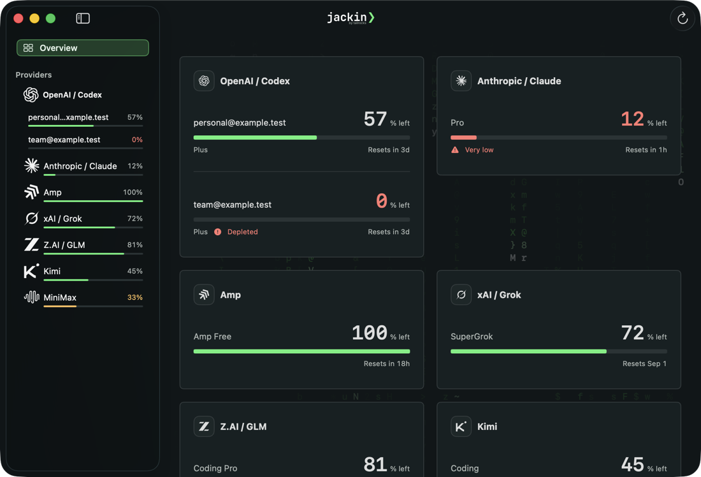
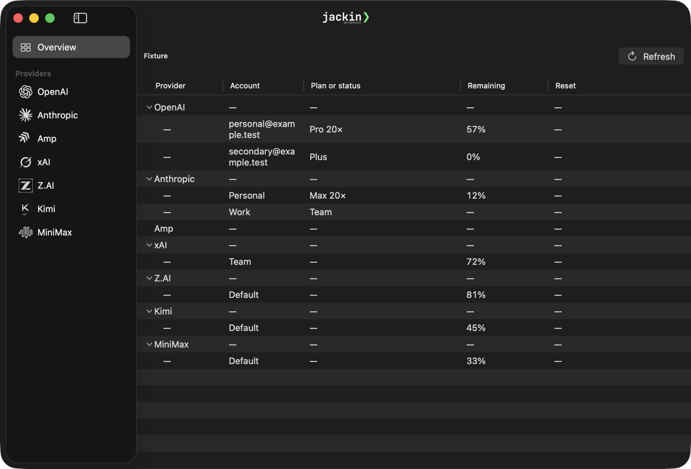
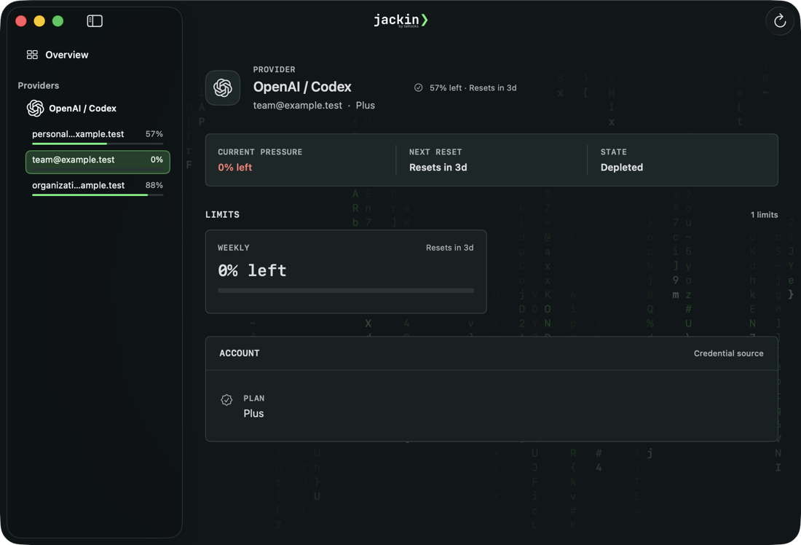
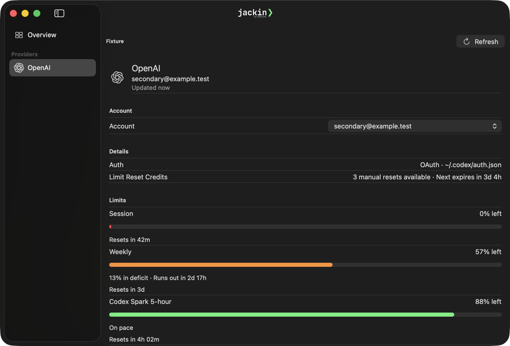
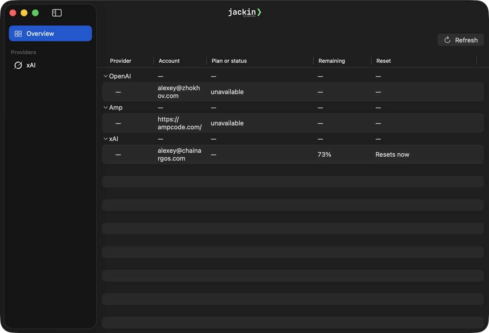
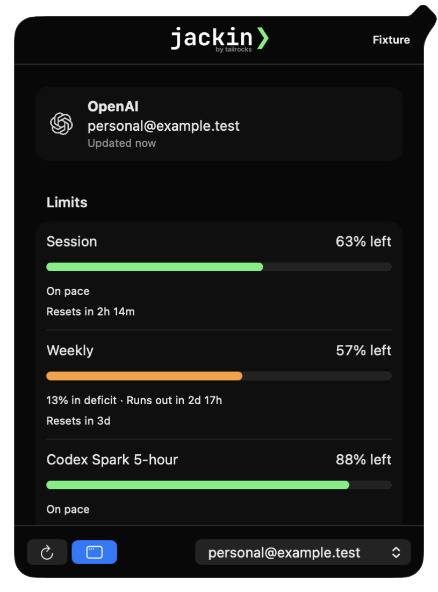

Side-by-side capture of the runnable prototype blessed in
SIGNOFF.md against
native/dist/JackinDesktop.app built from this branch. Both were launched from
their built bundles on matching fixtures at the same window size. The written findings live in
09 — Shipped surface review;
this page exists because the composition gap is not describable in prose.


Table. No meters, no cards, no design tokens. The Reset column
is empty for every row, provider rows are entirely em dashes, account labels wrap
mid-word, the toolbar shows the debug string Fixture, and empty striped rows
fill the lower half.


List. Edge-to-edge ProgressView bars, no
grouping, no Plan row. Accounts moved out of the sidebar into a Picker
dropdown, leaving a stray empty combobox in the rail.

provider_glance_rows and
desktop_inventory — whose inclusion rules disagree. Anthropic, Z.AI, Kimi and
MiniMax are absent although the broker holds fresh data for three of them. OpenAI reads
unavailable; xAI reads Resets now where the broker says
Resets in 3d 5h; Amp's account identity is the URL
https://ampcode.com/. The Overview pill is system blue, which
BrandColors.swift explicitly forbids for selection wells.

Fixture is rendered in the header, the Open Usage control is a
system-blue icon button with no label, there is no Liquid Glass treatment, and the third
limit row clips at the bottom edge without a scroll affordance.
DesignSystem/Brand.swift is 419
lines — stage, card, inset, hover,
separator, meterTrack, muted, quiet,
warning, danger, selectionWell,
phosphorWash, plus the JackinSpace scale. Production
BrandColors.swift is 85 lines carrying the phosphor accent only.
GlassEffectContainer,
.buttonStyle(.glass) or .glassProminent in
native/Sources/; the prototype uses all three.
meterPercent crosses the FFI boundary and is drawn
only in the detail view and the popover. Overview draws none.
VisualQAFixtureID stops at F14, so the localization scenarios and
everything above F14 have no production counterpart.
Application performed a reentrant operation in its NSTableView delegate, which
Apple states will become an assertion.
This is not a SwiftUI-only fix. The em-dash filler, the column-shaped label
fields, and the split sidebar/table sources all originate in Rust —
crates/jackin-usage/src/host.rs hard-codes — into
account_column_label, remaining_label,
reset_display_label and provider_column_label so that provider rows
have table cells to fill. Collapsing the parallel projection builders comes first, or the
rebuild fights the DTOs.